pieces batch-generated from my templates: 495 carousel slides, 104 per-municipality pieces and 208 stickers. Plus the cards made in the studios.
lines of code across the tools, written with AI from my specifications
web studios that automate campaign cards: the team types the text, picks the photo and downloads the finished piece
of manual work absorbed by batch production, on the 807 pieces alone. Studio cards add more: each one took about 8 minutes by hand.
AI-generated images or graphic elements in the pieces I signed: AI stayed in the engineering, the creative work stayed with me
between the first carousel published, on Aug 11, and the first-round victory
An identity already in place, and a campaign that needed to speak the language of social media.
Starting point
I arrived with the identity foundation already set by another art director: logo, typography, palette and graphic elements. My mission was to extend that system into digital, where the campaign needed a different pace and more closeness.
Visual language
For social media, I chose a rawer, lighter and more human language, one that conveyed feeling and showed the candidate in a way voters had not seen before.
Documentary approach
Instead of handing out flyers, show the journey up close.
I kept the brand elements and changed the treatment. The line became documentary: in every photo and every carousel, followers were right there with the candidate, in the towns, with the people. Photo selection, editing and treatment were under my direction, from the avatar to the carousels.
The language in use: profile kits, carousels and cards.
The profile pieces were made in Photoshop. In them, the photo leads and the campaign identity comes in as the signature.
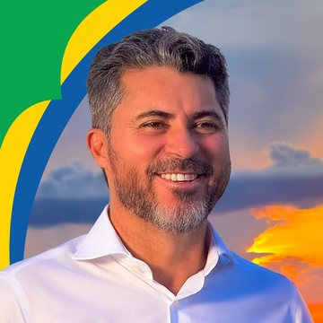
Launch
Full kit for the debut: avatar, Facebook, YouTube and X covers, Instagram highlights.
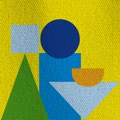
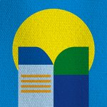
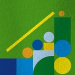
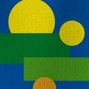
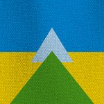
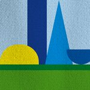
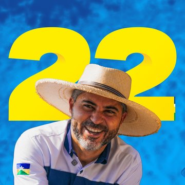
Second kit
New photo and the candidate’s number reinforced across the profile, with redone highlights.
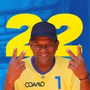
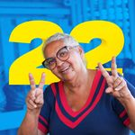
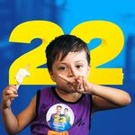
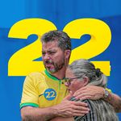
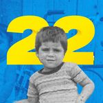
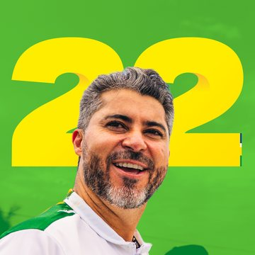
Final stretch
New profile picture, also reinforcing the number, for the last week. The second kit’s highlights stayed.
Governor-elect
Fourth kit, with the official photo and new highlights, made the day after the victory.
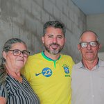
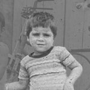
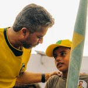
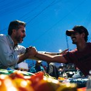
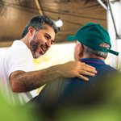
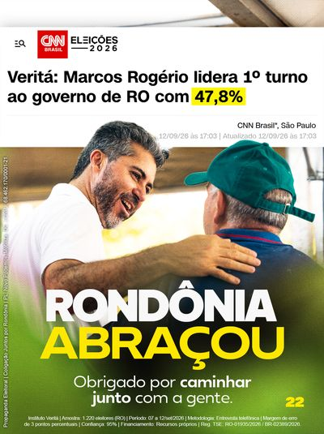
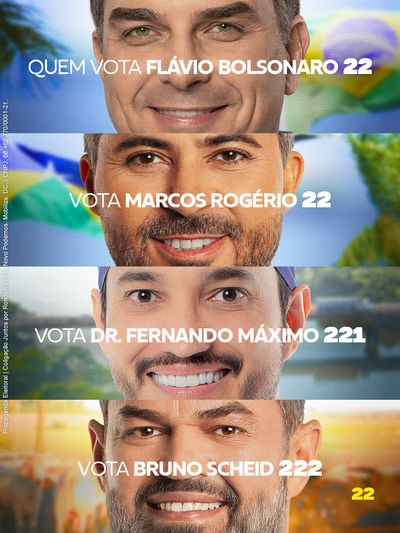
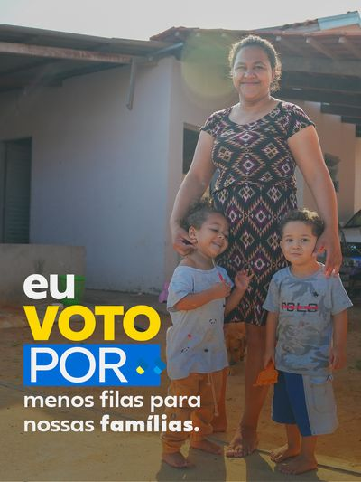
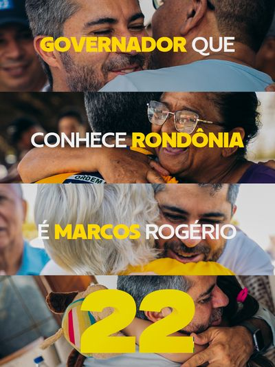
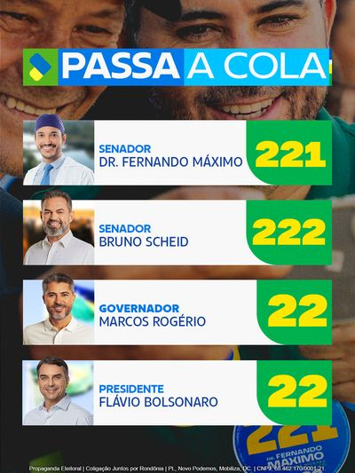
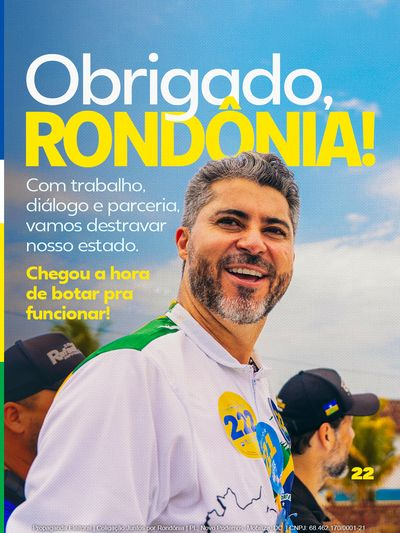
A separate identity, to reinforce the message.
Beyond the official profile, I made the cards for the supporters page. It had its own identity and worked as reinforcement: it echoed polls, debates and mobilization calls in a different voice, without repeating the candidate’s look.
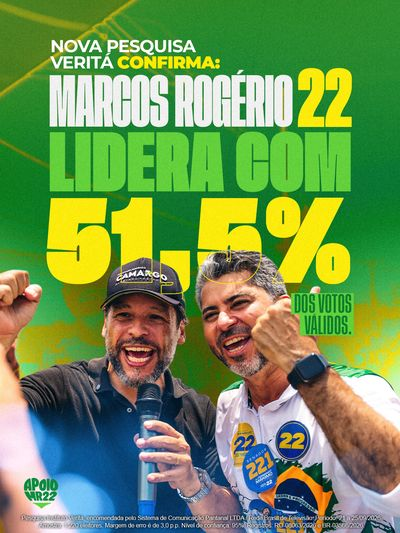
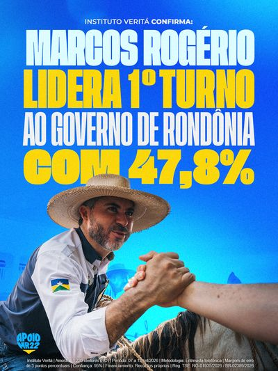
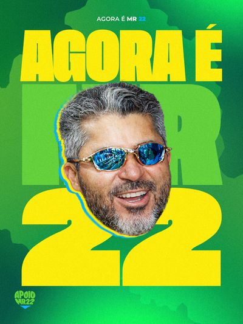
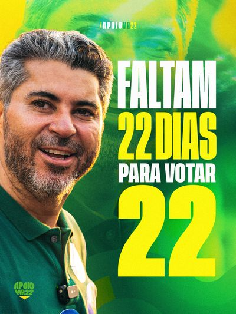
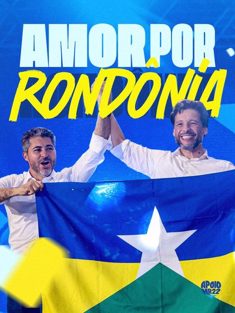
Separate design decisions from repetition.
The official profile was crafted piece by piece. Mobilization and paid media demanded volume. Mobilization went out over WhatsApp: cards for the agenda, sticker drives, campaign walks and more, with the schedule changing by the hour. In paid media, the same message reached all 52 municipalities: carousels in feed format and every other piece in 9:16, with the information locked inside the 1:1 area so it works under any crop. On top of that came the debate cards, which had to go out in real time. At that pace there are three risks: the piece arriving late, the team burning out on repetitive work, and the identity coming apart with each new version. For these two workstreams, I organized production in three layers:
The piece is born in Figma or Photoshop
Grid, type, color, photo and hierarchy are decided by me, in the design tool.
Every decision becomes a measurement
Margins, tracking, where the line breaks, what grows and in which direction. Auto layout holds these rules.
The team fills in only what changes
Text, photo, town, date. The tool locks the identity and opens the variable fields.
On my part, there was never a decision to use AI to generate images or graphic elements in the pieces. AI came in as a programming partner (Claude Code), to write the tools and the batch-production scripts, and for mechanical tasks such as cutting the person out of the photo background.
A quote studio for each broadcaster.
For each broadcaster I designed a dedicated frame in Figma and a web studio that reproduces it measurement by measurement. During the broadcast, the designer pastes the quote, picks a photo and template, and downloads the finished card in two formats: 3:4 feed and 9:16 story. The cards below were published on the debate nights themselves, between 7 and 10:30 pm.
Line breaks must match Figma exactly. That is why the studio applies the same typography (Work Sans 30 on 40, −4% tracking): without the tracking, the sentence breaks elsewhere and the card loses its shape.
- Rondoniaovivotv · Sep 18Blue, dark blue and white.
- SIC TV | Record · Sep 21Inverted layout, text on top and a speech-bubble tail. History of the last 20 cards to reopen and fix.
- Rede Amazônica | Globo · Sep 29125 px corner and a top ornament, electoral caption with a built-in shadow.
- Grupo SGC · Oct 150 px diagonal corners and yellow or blue quotation marks, in all four combinations.
- PreviewScrolling zooms the photo around the cursor and the card drags vertically, snapping to its default position.
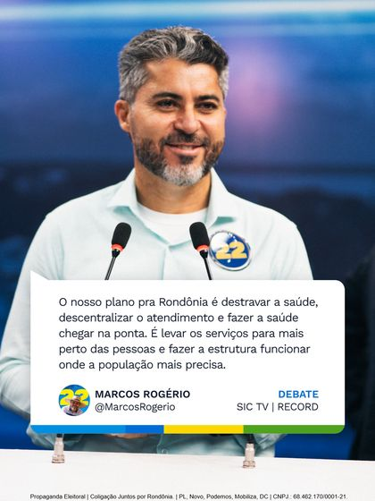
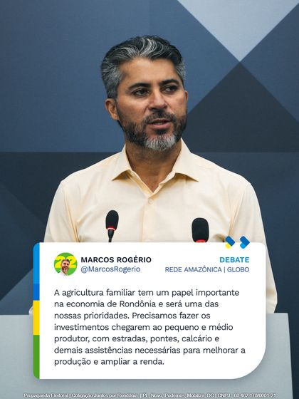
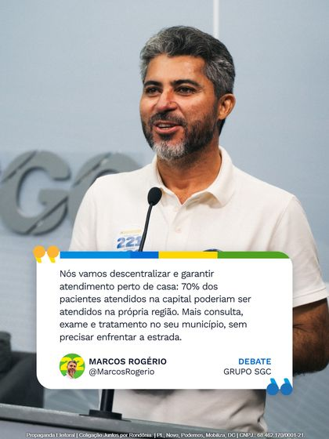
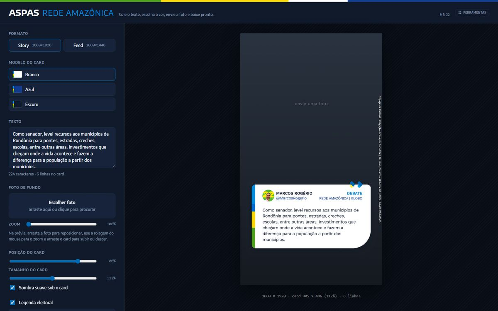
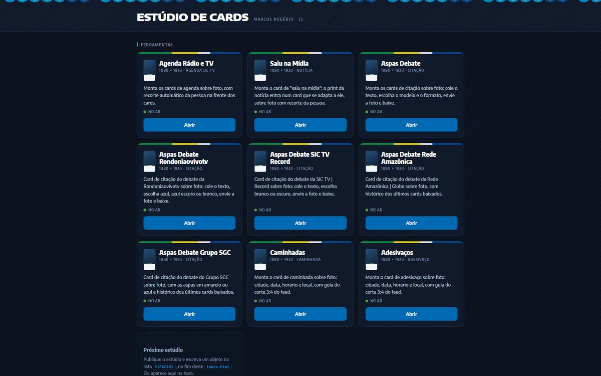
One template, 52 towns, 495 slides.
Paid media had several workstreams throughout the campaign. The largest in scale was regionalization: each municipality got a carousel of up to ten slides with the town’s projects and proposals. I designed one template in Figma with auto layout, and the 52 versions came out of it through API editing, checked piece by piece.
The same logic produced two series per town for paid media on every network (Instagram, Facebook and the rest): Conheça meu trabalho em {cidade} (“See my work in {town}”) and the Health series, {cidade} merece ser atendida em {cidade} (“{town} deserves care in {town}”). That is 104 more pieces, designed in 9:16 with the information always centered in the 1:1 area, to survive any crop the platform applied.
- In the per-municipality series, the title block grows upward, anchored above the blue band. A long name pushes the top and never invades the footer.
- Leading trim at cap height: the space auto layout measures is the space you see in the artwork.
- Line height and tracking of the town name in %, so they scale with the font.
- 1012 px max width on the name, so it breaks the line instead of overflowing the piece.
- In the Health series, the font width (from Condensed to Expanded) was chosen town by town: fewer lines, without splitting the name.
208 digital stickers on the eve of the election.
For the final motorcade, each town got four story stickers: Tá fechada com o 22 (“locked in with 22”), Destrava (“unlock”), Botar pra funcionar (“make it work”) and É Marcos Rogério 22 (“it’s Marcos Rogério 22”). I made three templates by hand for each series, measured their rules, and the rest was assembled in auto layout in one morning.
Each series has its own rules, because the town name changes everything: from Jaru, a single word, to Nova Brasilândia D’Oeste.
- 131 px bands that hug the text; line breaks never leave DE, DO or DA at the end of a line.
- Single-line name: FECHADA and COM O 22 side by side when the first line exceeds 763 px.
- Name spelling matches the rest of each town’s material.
- The brush-script word uses a local font the API cannot load: it was cloned from the template, never retyped.
- Transparent background computed from two versions of each sticker, on black and on white.
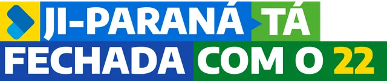
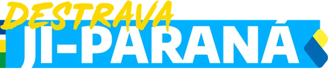
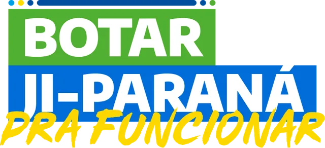
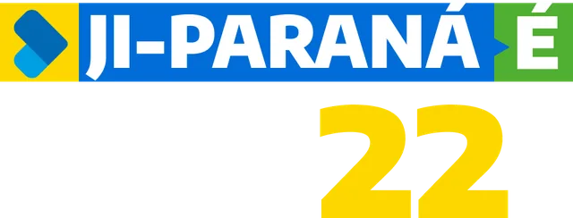
Nine web studios, one rule: the identity stays locked.
Each studio reproduces on canvas a card I designed in Figma, with measurements taken from auto layout. Team designers work in the browser, without opening a design file, and only touch what is allowed to change. Where there was no server cost, I published on GitHub Pages, open and hidden from search engines; where there was a paid API, on Vercel, behind a password.
- Radio & TV agendaAutomatic person cutout and four layers: blurred background, sharp photo, elements and the cutout on top, all in register.
- Saiu na Mídia (in the news)The news screenshot goes into a fixed-width card and the height follows the image. Six templates.
- Quotes · 5 versionsOne for general debates and one per broadcaster, with history, zoom and drag in the preview.
- Campaign walksTown, date and time of the walk over a photo, with a history of cards already made.
- Sticker drivesThe info block grows upward from a fixed footer. Day, date and time change color together.
- DashboardA single address that lists and opens every studio. Adding a new one is one item in the config.
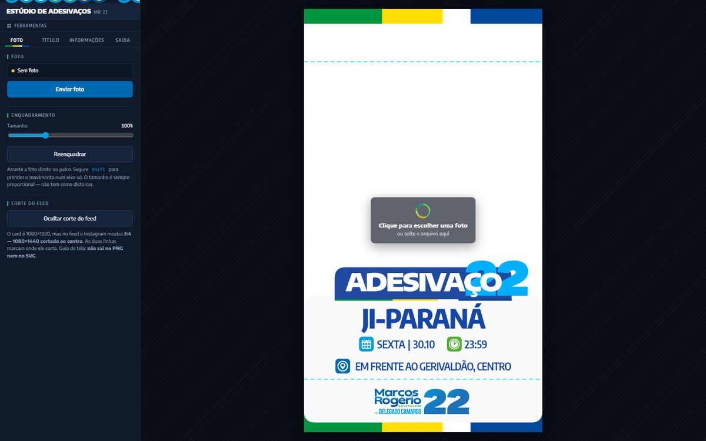
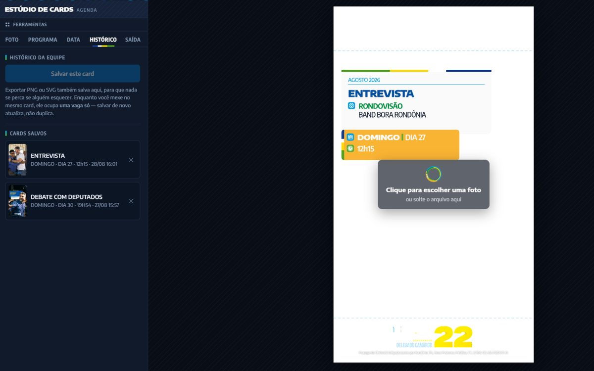
See the piece the way the audience will, before posting.
Carousel cloud
- A desktop library that publishes each carousel to a fixed link. Recipients open it on their phone, no login; republishing swaps the content and keeps the link.
- 13 carousels published, 106 slides, including video.
- Video converted to H.264 with no loss of resolution or fps, because the original HEVC showed black in Chrome on Android.
- Lightweight thumbnail so the link arrives with an image on WhatsApp.
True-to-app simulation
- The viewer follows Instagram’s rules: every slide in the first one’s ratio, advance after 28% of the width, snapping with no spring effect.
- Profile preview in Figma, checked against an app screenshot: 3:4 grid, light and dark themes linked by variables. That is where the profile kits were tested before going live.
- Photoshop mirror: the open piece shows up on the phone in about half a second, without slowing the app down.
Where AI came in, and what stayed with me.
| Area | What AI did | What stayed with art direction |
|---|---|---|
| Language and pieces | Nothing. | Visual strategy, photo selection and editing, profile kits, carousels, cards. |
| Web studios | Wrote the code from the measurements and behavior I specified. | Layout, type, color, what can and cannot change, testing with the team. |
| Batch production in Figma | Cloned templates, swapped text and built auto layout via the API. | The templates, the line-break and spelling rules, checking every piece. |
| Photos in the studios | Cut the person out of the background. | Photo choice, framing and composition. |
| Tools in production | Versioning, studio deploys, video conversion and thumbnails for the carousel cloud. | Where each tool is hosted, who has access and what goes to review. |
August to October.
First carousels on the profile: Student’s Day and Rota 22.
Launch kit: avatar, covers and highlights. Design starts on the per-municipality carousel template.
Carousel cloud and phone simulator.
Agenda, Saiu na Mídia, Sticker-drive and Quote studios; single dashboard.
First debate with real-time cards.
“Rondônia é 22” and “Partnership with the 52 municipalities” carousels; pinned biography and proposals.
Per-municipality paid series: “See my work” and Health.
Rondoniaovivotv debate, with its own studio.
Second profile kit, reinforcing the number.
SIC TV | Record debate.
Rede Amazônica | Globo debate. New profile picture.
Grupo SGC debate.
208 stickers for the final motorcade, in one morning.
Election. First-round victory.
Governor-elect kit: official photo and new highlights.
What this work shows.
Art direction
Extending an existing identity into digital and leading photography, editing and pieces in a lighter, more human documentary line.
Graphic design
Profile kits, carousels and cards in Photoshop; supporters page cards; stickers with per-town rules.
Creative engineering
Turning design rules into AI-powered tools and automations: web studios, batch production in Figma, publishing and review on the phone.
Production at scale
Per-municipality paid pieces, cards at the pace of debates and mobilization, tools the team uses without training.